Es el protagosnista del primer juego, experimento el colapso de la sociedad en 2013 y perdio a su hija ese mismo dia.
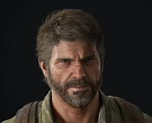Es la seudoprotagonista del primer juego y la protagonista del DLC left behind y el segundo juego, ella es inmune al cordyceps.
La hija biologica de Joel, ella muere desangrada el dia del colapso en 2013.
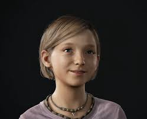La compañera de contrabando de Joel, ella muere a manos de soldados de FEDRA en el capitolio de Boston.
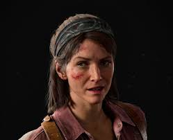Es un conocido de Joel, luego del brote quedo solo en su pueblo y perdio a su novio.
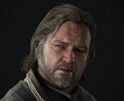El hermano menor de Joel, en el primer juego salva a Joel y lo ayuda en su aventura. En el segundo juego, es cegado por la venganza de su hermano.
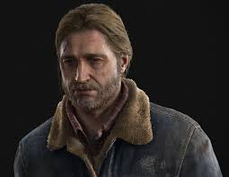La esposa de Tommy, ella fundo JAckson, Wyoming.
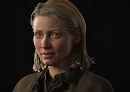El hermano menor de Henry, junto a este, se une a Joel y Ellie, pero es infectado y su hermano acaba con su sufrimiento.
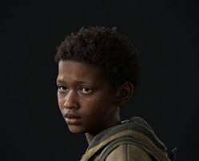El hermano mayor de Sam, se une junto con su hermano a Joel y Ellie, pero luego de disparar a su hermano, se suicida.
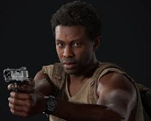Un personaje que apareció en The Last of Us I, líder de las luciérnagas, relacionada con Ellie ya que fue su responsabilidad durante un tiempo.También tuvo relarión con Tess y Joel por contravando.
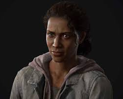David es un personaje secundario en The Last of Us I, tuvo encuentro con Ellie cuando ella cazava un ciervo y tuvieron un acuerdo de cambios de suministros, líder de un grupo de sobrevivientes en Silver Lake.
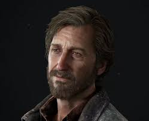El hiba a crear una cura con el cerebro de Ellie, matandola en el proceso, pero fue interrumpido por Joel y asesinado por el mismo. Este sucedo desencadena la secuela.
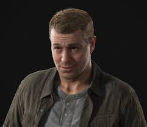LIder de la WLF, este hombre lidera una guerra contra los serafitas, ya que el mato a la lider de estos.
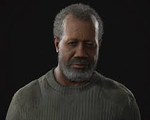esta mujer es la lider de los Serafitas, dice haber tenido una vision que decia que el Cordyceps es un castigo divino por el uso exesivo de tecnologia.
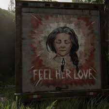Nacido mujer bajo el nombre de "Lily", Lev siempre cuestiono a los Serafitas, cuando lo obligan a casarse con un anciano en vez de dejarlo ser soldado, Lev se rapa y afirma su identidad como hombre, los serafitas lo tachan de apostata y lo hechan.
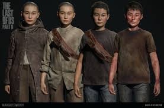La hermana mayor de Lev, al principio le dijoa su hermno que ocultara sus sentimientos, cuando Lev se revela, Yara va tras el y es tachada de apostata, en el transcurso de la historia, ella pierde un brazo y al final de esta ella mata a Isaac dixon de un disparo en la espalda, lo que lleva a que los Wolfs la maten a tiros.
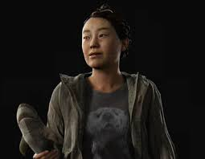Este grupo conformado por Abby y sus amigos, varios ex-luciernagas ahora parte de la WLF, son quienes matan a Joel y son el objetivo de Ellie.
Es la protagoista de la segunda mitad del juego, hija del cirujano que crearia la cura, mato a Joel en busca de venganza por su padre.
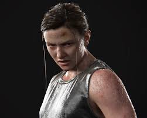Owen es un aliado de Abby, miembro de el grupo de Salt Lake, este tenia sentimientos por Abby, pero ella estaba cegada por la venganza, mure junto a su novia embarazada, Mel, a manos de Ellie.
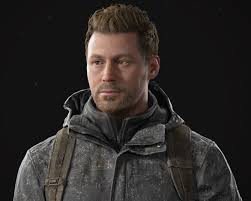Es la nocvia de Owen, tampoco participa en el asesinato de Joel, sin embargo muere a manos de Ellie, ella estaba embarazada de Owen, este dato deja a Ellie en shock.
} 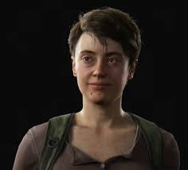Fue parte del asesinato de Joel, es quien atrapa a Ellie. Mas arde en le juego es asesinado de un corte en la yugular por Ellie, se sabe que tenia una novia, Leah.
Es la novia de Jordan, ella no participo en la muerte de Joel, la encontramos muerta en la estacion de TV a manos de los serafitas.
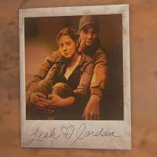Era estudiante de Jerry, ella esta en un hospital y ayuda a Abbya conseguir recursos para salvar a Yara, solo para despues ser atrapada y torturada hasta morir por Ellie.
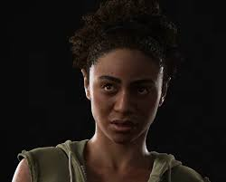Nacio en Mexico, es uno de los mejores soldados de la WLF, a differencia de la mayoria, el muere de un disparo a la cabeza por parte de Tommy.
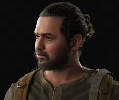Al igual que Manny, este fue asesinado por Tommy, quien lo torturo para sacarle informacion.
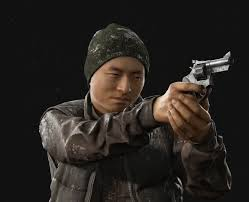son la primera face de infeccion, estos sigue teniendo su conciencia pero su cuerpo es completamente controlado por el cordyceps
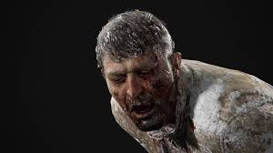A pasar dos semanas de enfermos los Infectados evolucionan a Acechadores. En esta fase, cuentan con un hongo en crecimiento en su cabeza que les cubre un ojo, dejándolos parcialmente ciegos. Se ocultan en lugares cerrados y atacan a su presa cuando esta pasa cerca de ellos, aunque pueden detectarla cuando está a varios metros de ellos.
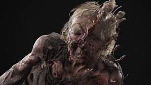Los Chasqueadores son la tercera etapa de la infección, que ocurre al año de la infección inicial. El hongo ahora ocupa toda la cabeza del huésped, blindandolo y dejándolo ciego pero agregándole un sentido de ecolocalización.
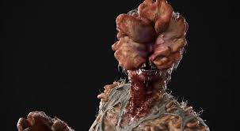estos son la cuarta fase de infeccion, ocurre solo en climas humedos, estos lanzan esporas de Cordyceps.
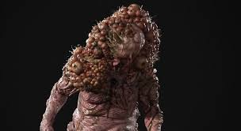Son la version de clima seco de los tambaleantes, estan cubiertos por el hongo, dandoles mas resistencia y pueden lanzar esta "armadura".
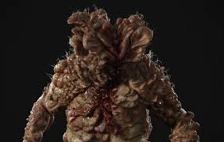El Cordyceps en su mayor esplendor, el hongo consume completamente al huesped, dejandolo solo como un esqueleto, emite esporas.
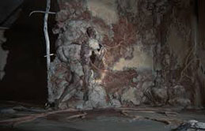El Rey Rata es una etapa única tardía de los infectados de la cual solo se conoce un ejemplar que se encuentra en el hospital donde todo comenzo, se insinua que fue el paciente cero.El más fuerte de todos los tipos de infectados, el Rey rata está formado por varios infectados envueltos en una matriz del hongo cordyceps. Se lo conoce por emitir esporas, lanzar proyectiles con esporas virulentas y embestir a sus presas.
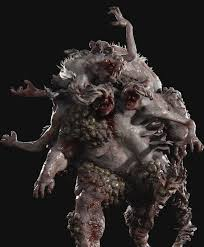